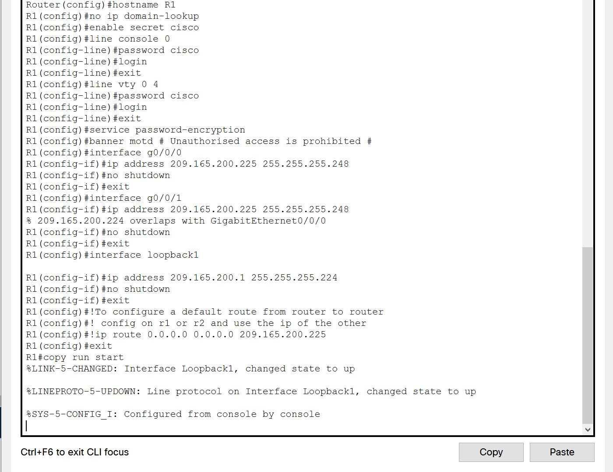
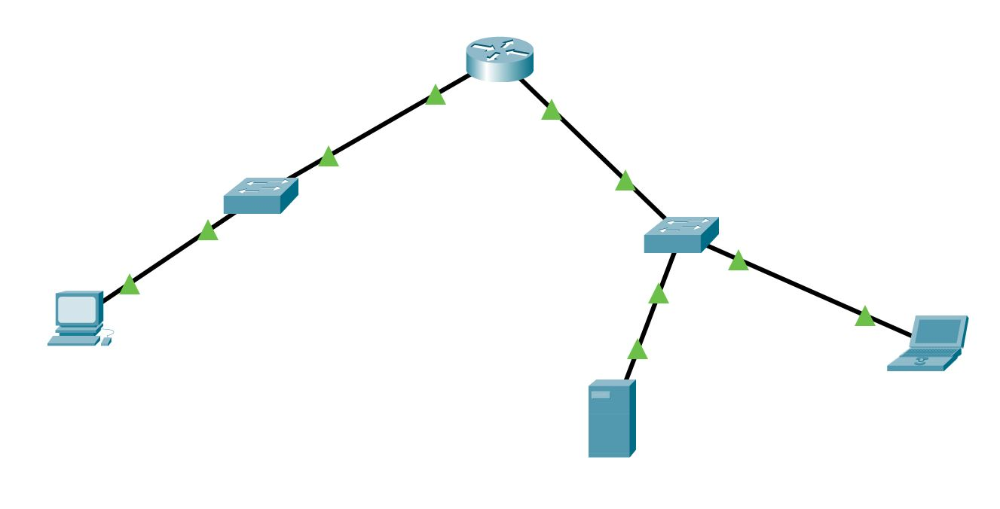

Project
Network Configuration Template Library
About
I created these templates to increase my efficiency when configuring network devices and decrease mistakes. I got the idea from TFTP (Trivial File Transfer Protocol) which can
be used for creating configuration backups or distributing them to devices. My idea would not work on a large-scale network such as a corporate network. I had this idea
for a Cisco practical exam. The idea was to create templates like the one in the above image. I can then replace the text in blue with the configurations required for the
device being configured. The green text is comments. Using Cisco packet tracer, a virtual network environment I was able to experiment and create these templates for several network configurations.
I created templates for:
- ACL [Access Control List]
- NAT [Network Address Translation]
- PAT [Port Address Translation]
- NTP [Network Time Protocol]
- OSPF [Open Shortest Path First]
- SSH [Secure SHell]
- TFTP [Trivial File Transfer Protocol]
- Switch basic Configuration
- Basic Router Configuration
Below is an example of the basic router configuration
Example
Configuration Template being implemented
Topology
